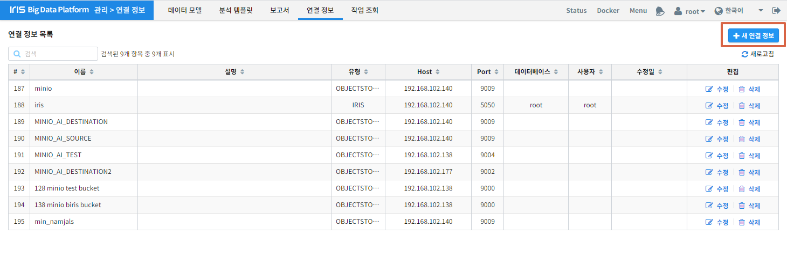
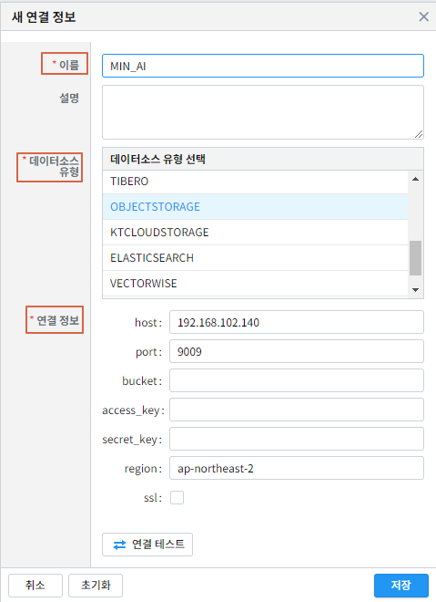

ML 범용 명령어 - mnist 예제¶
IRIS Discovery Service의 DSL 명령어를 활용하여, mnist 숫자 이미지 다운로드부터 전처리, 학습, 예측, 평가, 서빙하는 시나리오입니다.
mnist 이미지 다운로드¶
mnist 숫자 이미지를 아래 사이트에서 다운로드 및 압축을 해제합니다.
https://github.com/myleott/mnist_png/blob/master/mnist_png.tar.gz
개인 객체 저장소에 업로드¶
boto3 패키지가 필요합니다.
pip install boto3아래 인자를 입력해주세요.
testing : test 이미지 로컬 디렉토리 경로
training : train 이미지 로컬 디렉토리 경로
bucket : 개인 객체 저장소의 bucket
prefix : 개인 객체 저장소의 key (상위 키)
endpoint_url : 개인 객체 저장소의 url
aws_access_key_id : 개인 객체 저장소의 access_key
aws_secret_access_key : 개인 객체 저장소의 secret_access_key
import boto3
import os
local = {
'testing': '/home/oss/tensorflow/mnist_img/mnist_png/mnist_png/testing',
'training': '/home/oss/tensorflow/mnist_img/mnist_png/mnist_png/training'
}
obj_storage = {
'bucket': 'user1',
'prefix': 'mnist',
}
obj_setting = {
'endpoint_url': 'http://192.168.102.140:9015',
'verify': False,
'aws_access_key_id': 'minio',
'aws_secret_access_key': '??'
}
def upload_obj(cli, files, bucket, keys):
if isinstance(files, str):
files = [files]
if isinstance(keys, str):
keys = [keys]
for i, (file, key) in enumerate(zip(files, keys), 1):
try:
cli.upload_file(file, bucket, key)
if i % 100==0:
print('{}개 완료'.format(i))
except ClientError as e:
raise Exception('upload key[{}, {}] fail. {}'.format(bucket, key, e))
def make_path(root_path, obj_storage_prefix):
local_path_list = []
obj_path_list = []
for path, dirs, files in os.walk(root_path):
for file in files:
full_path = os.path.join(path, file)
obj_path=full_path.replace(root_path, obj_storage_prefix)
obj_path_list.append(obj_path)
local_path_list.append(full_path)
return local_path_list, obj_path_list
mc = boto3.client('s3', **obj_setting)
local_path, obj_path = make_path(local['testing'], obj_storage['prefix'])
upload_obj(mc, local_path, obj_storage['bucket'], obj_path)
local_path, obj_path = make_path(local['training'], obj_storage['prefix'])
upload_obj(mc, local_path, obj_storage['bucket'], obj_path)
연결정보 등록¶
대시보드 , 연결정보 를 차례로 클릭합니다.새 연결 정보를 클릭합니다.
연결 이름, 데이터소스 유형, 연결정보를 입력하고 ``저장``버튼을 클릭합니다.
전처리¶
전처리는 IRIS Discovery Service의 img2tsv , splitter 를 사용합니다.
이미지 벡터화¶
객체저장소의 mnist/0 폴더는 one-hot 백터 형식으로 라벨을 [1,0,0,0,0,0,0,0,0,0]로 할당하며, tag는 zero라고 줍니다.
같은 방식으로 나머지 1~9 숫자 이미지도 벡터화합니다.
img2tsv src=OBJECTSTORAGE.MIN_AI:mnist/0 dst=tsv/0.tsv column_name=feature label=(label, [int32], [1,0,0,0,0,0,0,0,0,0]) tag=zero
결과
total |
|---|
6796 |
img2tsv src=OBJECTSTORAGE.MIN_AI:mnist/1 dst=tsv/1.tsv column_name=feature label=(label, [int32], [0,1,0,0,0,0,0,0,0,0]) tag=one
img2tsv src=OBJECTSTORAGE.MIN_AI:mnist/2 dst=tsv/2.tsv column_name=feature label=(label, [int32], [0,0,1,0,0,0,0,0,0,0]) tag=two
img2tsv src=OBJECTSTORAGE.MIN_AI:mnist/3 dst=tsv/3.tsv column_name=feature label=(label, [int32], [0,0,0,1,0,0,0,0,0,0]) tag=three
img2tsv src=OBJECTSTORAGE.MIN_AI:mnist/4 dst=tsv/4.tsv column_name=feature label=(label, [int32], [0,0,0,0,1,0,0,0,0,0]) tag=four
img2tsv src=OBJECTSTORAGE.MIN_AI:mnist/5 dst=tsv/5.tsv column_name=feature label=(label, [int32], [0,0,0,0,0,1,0,0,0,0]) tag=five
img2tsv src=OBJECTSTORAGE.MIN_AI:mnist/6 dst=tsv/6.tsv column_name=feature label=(label, [int32], [0,0,0,0,0,0,1,0,0,0]) tag=six
img2tsv src=OBJECTSTORAGE.MIN_AI:mnist/7 dst=tsv/7.tsv column_name=feature label=(label, [int32], [0,0,0,0,0,0,0,1,0,0]) tag=seven
img2tsv src=OBJECTSTORAGE.MIN_AI:mnist/8 dst=tsv/8.tsv column_name=feature label=(label, [int32], [0,0,0,0,0,0,0,0,1,0]) tag=eight
img2tsv src=OBJECTSTORAGE.MIN_AI:mnist/9 dst=tsv/9.tsv column_name=feature label=(label, [int32], [0,0,0,0,0,0,0,0,0,1]) tag=nine
train/test 분리¶
splitter src=OBJECTSTORAGE.MIN_AI:tsv train=(train.tsv, 0.8) test=(test.tsv, 0.2) dictionary=(dict.tsv, label, tag)
결과
train |
test |
|---|---|
54687 |
13793 |
test 데이터 등록¶
대시보드 - 데이터모델 을 클릭합니다.새 모델 을 클릭합니다.
연결 정보 를 선택하고 테스트 데이터 선택을 위해 찾아보기 를 클릭합니다.
팝업되는 창에서 TEST데이터를 찾아 선택된 파일 선택 을 클릭합니다.
분리기호를 \t 수정 후, 적용 - 분류 체크 를 클릭합니다. 모델 명을 mnist_test 로 입력 후 저장 버튼을 클릭합니다.
학습¶
학습은 IRIS Discovery Service의 fit 를 사용합니다.
설정 업로드¶
아래 python 스크립트를 활용하여 학습을 위한 설정을 개인 객체저장소에 업로드합니다.
boto3 패키지가 필요합니다.
pip install boto3아래 인자를 입력해주세요.
bucket : 개인 객체 저장소의 bucket
key : 개인 객체 저장소의 key
endpoint_url : 개인 객체 저장소의 url
aws_access_key_id : 개인 객체 저장소의 access_key
aws_secret_access_key : 개인 객체 저장소의 secret_access_key
config : TFDeep 명령어 문서 를 참조하여 입력
import boto3
import json
bucket = 'user1'
key = 'angora_mnist_config.json'
obj_setting = {
'endpoint_url': 'http://192.168.102.140:9015',
'verify': False,
'aws_access_key_id': 'minio',
'aws_secret_access_key': '??'
}
config = """
{
"env": {
"num_executors": 1,
"num_ps": 0
},
"model": {
"network": {
"backend": "tensorflow",
"class_name": "Sequential",
"config": {
"layers": [
{
"class_name": "Conv2D",
"config": {
"activation": "relu",
"batch_input_shape": [
null,
28,
28,
1
],
"filters": 32,
"kernel_size": [
3,
3
]
}
},
{
"class_name": "MaxPooling2D",
"config": {
"data_format": "channels_last",
"dtype": "float32",
"name": "max_pooling2d",
"padding": "valid",
"pool_size": [
2,
2
],
"strides": [
2,
2
],
"trainable": true
}
},
{
"class_name": "Flatten",
"config": {
"data_format": "channels_last",
"dtype": "float32",
"name": "flatten",
"trainable": true
}
},
{
"class_name": "Dense",
"config": {
"activation": "relu",
"activity_regularizer": null,
"bias_constraint": null,
"bias_initializer": {
"class_name": "Zeros",
"config": {
"dtype": "float32"
}
},
"bias_regularizer": null,
"dtype": "float32",
"kernel_constraint": null,
"kernel_initializer": {
"class_name": "GlorotUniform",
"config": {
"dtype": "float32",
"seed": null
}
},
"kernel_regularizer": null,
"name": "dense",
"trainable": true,
"units": 64,
"use_bias": true
}
},
{
"class_name": "Dense",
"config": {
"activation": "softmax",
"activity_regularizer": null,
"bias_constraint": null,
"bias_initializer": {
"class_name": "Zeros",
"config": {
"dtype": "float32"
}
},
"bias_regularizer": null,
"dtype": "float32",
"kernel_constraint": null,
"kernel_initializer": {
"class_name": "GlorotUniform",
"config": {
"dtype": "float32",
"seed": null
}
},
"kernel_regularizer": null,
"name": "dense_1",
"trainable": true,
"units": 10,
"use_bias": true
}
}
],
"name": "sequential"
},
"keras_version": "2.2.4-tf"
},
"loss": "categorical_crossentropy",
"metrics": "accuracy",
"optimizer": {
"SGD": {
"learning_rate": 0.001
}
},
"format": "h5"
},
"dataset": {
"train": {
"type": "minio",
"endpoint": "192.168.102.140:9015",
"access_key": "minio",
"secret_key": "minio123",
"bucket": "user1",
"path": "train.tsv",
"format": "tsv",
"header": true
},
"dictionary": {
"type": "minio",
"endpoint": "192.168.102.140:9015",
"access_key": "minio",
"secret_key": "minio123",
"bucket": "user1",
"path": "dict.tsv",
"format": "tsv",
"header": true
}
},
"tensor": {
"feature": {
"shape": "(28, 28, 1)",
"type": "float32"
},
"label": {
"shape": "(10, )",
"type": "float32"
},
"interpret": {
"shape": "()",
"type": "int32"
}
},
"fit": {
"input": {
"dataset": "train",
"feature": "feature",
"label": "label"
},
"checkpoint": {
"save_weights_only": true
}
},
"interpret": {
"dataset": "dictionary",
"key": "label",
"value": "tag"
}
}
"""
conn = boto3.resource('s3', **obj_setting)
obj = conn.Object(bucket, key)
obj.put(Body=config)
학습¶
fit deep batch_size=128 epochs=2 config=OBJECTSTORAGE.MIN_AI:angora_mnist_config.json into tf_mnist
결과
losses |
metrics |
|---|---|
{‘loss’: 2.2735725229548427} |
{‘accuracy’: 0.20473583} |
{‘loss’: 2.150804412119167} |
{‘accuracy’: 0.41432425} |
fit deep batch_size=128 epochs=3 retrain=True config=OBJECTSTORAGE.MIN_AI:angora_mnist_config.json into tf_mnist
결과
losses |
metrics |
|---|---|
{‘loss’: 1.9149726856615126} |
{‘accuracy’: 0.5695675} |
{‘loss’: 1.5214702637539697} |
{‘accuracy’: 0.67936534} |
{‘loss’: 1.1004468156504876} |
{‘accuracy’: 0.76993394} |
평가¶
mnist_test 를 사용합니다).model name = 'mnist_test' model_owner = root | eval deep tf_mnist feature=feature label=label rate=0.8 repeat=3
결과
no |
losses |
metrics |
|---|---|---|
1 |
{‘loss’: 0.8852438026895889} |
{‘acc’: 0.8077567} |
2 |
{‘loss’: 0.8139687060163571} |
{‘acc’: 0.84133184} |
3 |
{‘loss’: 0.818142257630825} |
{‘acc’: 0.8341704} |
예측¶
mnist_test 를 사용합니다).model name = 'mnist_test' model_owner = root | predict tf_mnist feature
결과
label |
tag |
feature |
prediction |
interpreted |
|---|---|---|---|---|
1,0,0,0,0,0,0,0,0,0 |
zero |
0.0,0.0,0.0,0.0,0.0,0.0,0.0,0.0,0.0,0.0,0.0,0…. |
1,0,0,0,0,0,0,0,0,0 |
zero |
… |
… |
… |
… |
… |
예측 (서빙)¶
mnist_test 를 사용합니다).model name = 'mnist_test' | top 30 feature | serving predict tf_mnist col=feature shape=[(28,28,1)] layer_name=Conv1_input tag=(zero, one, two, three, four, five, six, seven, egiht, nine, ten)
결과
label |
tag |
feature |
predictions |
probability |
interpreted |
|---|---|---|---|---|---|
0,0,0,0,0,1,0,0,0,0 |
five |
0.0,0.0,0.0,0.0,0.0,0.0,0.0,0.0,0.0,0.0,0.0,0… |
[0.62, 0.01, 0.04…] |
0.62 |
five |
1,0,0,0,0,0,0,0,0,0 |
zero |
0.0,0.0,0.0,0.0,0.0,0.0,0.0,0.0,0.0,0.0,0.0,0… |
[0.14, 0.03, 0.03…] |
0.38 |
zero |
… |
… |
… |
… |
… |
… |
조회¶
serving status
를 사용합니다.
| ml 모델 목록을 보기 위해 아래 명령어를 입력합니다. 배포한 모델은 serving 속성이 on 으로 됩니다.
mlmodel list
결과
id |
user |
name |
type |
category |
algorithm |
serving |
create |
modified |
|---|---|---|---|---|---|---|---|---|
1 |
root |
tf_mnist |
tf |
classification |
deep |
on |
2019/11/19 00:11:22 |
2019/11/19 00:11:33 |
… |
… |
… |
… |
… |
… |
… |
… |
… |
tf_mnist 모델을 상세 조회하기 위해 아래 명령어를 입력합니다.
mlmodel summary tf_mnist
결과
name |
value |
|---|---|
id |
1 |
user |
root |
name |
tf_mnist |
filename |
saved_model.pb |
format |
saved_model |
type |
tf |
category |
deep |
algorithm |
deep |
feature |
feature |
label |
label |
parameter |
{‘batch_size’: 128, ‘epochs’: 5, ‘continuous’: ‘True’, ‘config’: ‘objectstorage.MINIO_AI_SOURCE:USERS/pjh0347/mnist/angora_mnist_config.json’} |
evaluation |
[] |
cross_validation |
{} |
grid_info |
{} |
train_cnt |
55260 |
elapsed |
569.0207872390747 |
dictionary |
dict.tsv |
cdate |
20200323171102 |
mdate |
20200324100417 |
serving |
off |
serving_name |
root_tf_mnist |
state |
DONE |
tf_mnist 모델의 서빙 상태를 조회하기 위해 아래 명령어를 입력합니다.
serving status tf_mnist
version |
state |
label |
|---|---|---|
1 |
AVAILABLE |
test |